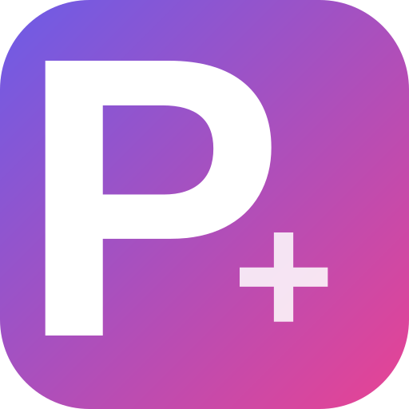
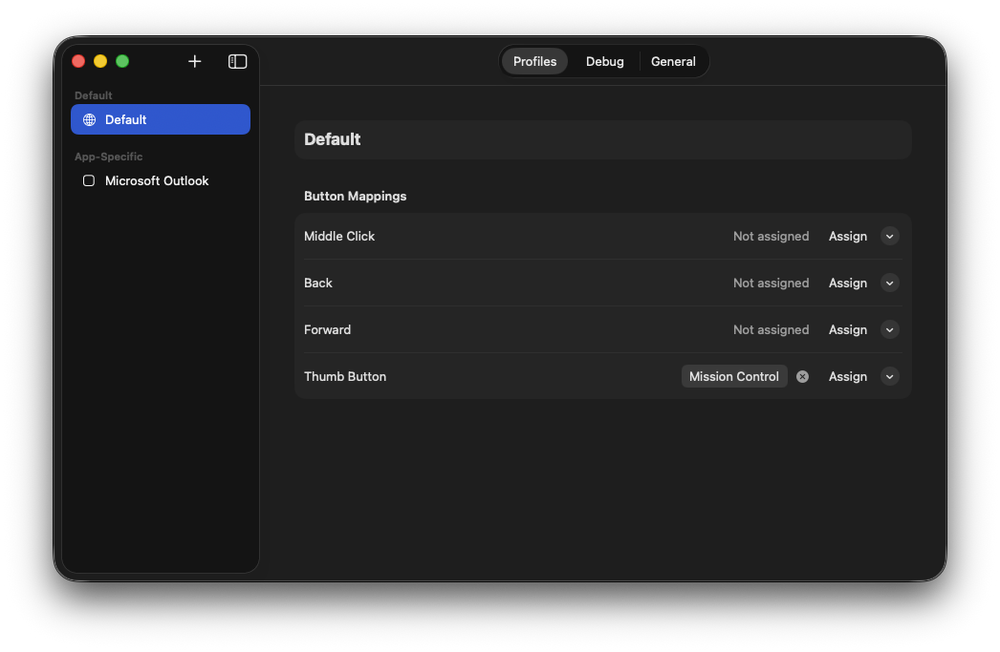

Per-app profiles
Safari gets browser navigation, Xcode gets build shortcuts, everything else gets your defaults.
Open source · macOS menu bar utility

Ptions+Ptions+ maps the extra buttons on your mouse to keyboard shortcuts, with a different set of mappings for every app.
Maintained Version 1.2.0 macOS 13+ MIT
You have a mouse with extra buttons. The vendor's companion app is
200 MB, wants an account, and breaks after every macOS update. You
just want Back to send Cmd+[
in Safari, and Mission Control on the thumb button everywhere else.
Ptions+ does that, from the menu bar, in about 8 MB of memory.

Safari gets browser navigation, Xcode gets build shortcuts, everything else gets your defaults.
Mission Control, App Exposé, Show Desktop, and Launchpad, with a graceful fallback when macOS does not offer them.
Next and Previous Space, Spotlight, Screenshot Tool, Notification Center, Lock Screen and more. Presets follow your active keyboard layout.
Click Assign and press the combination — even system-reserved ones such as Control + Arrow that macOS would otherwise swallow.
Native SMAppService registration, with
the system as the source of truth.
A live view of raw mouse events, and which mouse produced them, so an unrecognised button is a two-minute diagnosis rather than a guess.
Every connected mouse can carry its own model and mappings, remembered across reconnects.
Mouse model selection is manual. Any mouse that sends
otherMouseDown events over HID works; pick
the closest model, or one of the generic options.
| Logitech MX | Logitech G | Generic |
|---|---|---|
| MX Master 4 | G502 | Generic (5 buttons) |
| MX Master 3 / 3S / 2S | G604 | Generic (3 buttons) |
| MX Anywhere 3 | ||
| MX Ergo | ||
| MX Vertical |
.sha256 file
so you can verify what you downloaded.
Requirements
macOS 13 Ventura or later, on Apple silicon or Intel. Ptions+ runs in the menu bar and has no Dock icon.
Prefer to build it yourself, or want to read the code first? The build instructions and the full source are in the repository.
Ptions+ collects nothing and sends nothing
The app makes no network requests. There is no telemetry, no
analytics, no crash reporting, no update check, and no account. Your
configuration is a single JSON file at
~/Library/Application Support/Ptions+/config.json,
which stays on your Mac until you delete it.
This page behaves the same way. Every stylesheet, font, and image is served from this repository, so nothing here loads from a third party, sets a cookie, or records your visit.
Settings are fully operable from the keyboard and every control exposes a name to VoiceOver. Known limitations, including the parts that deliberately require a physical key press, are documented in the accessibility note.